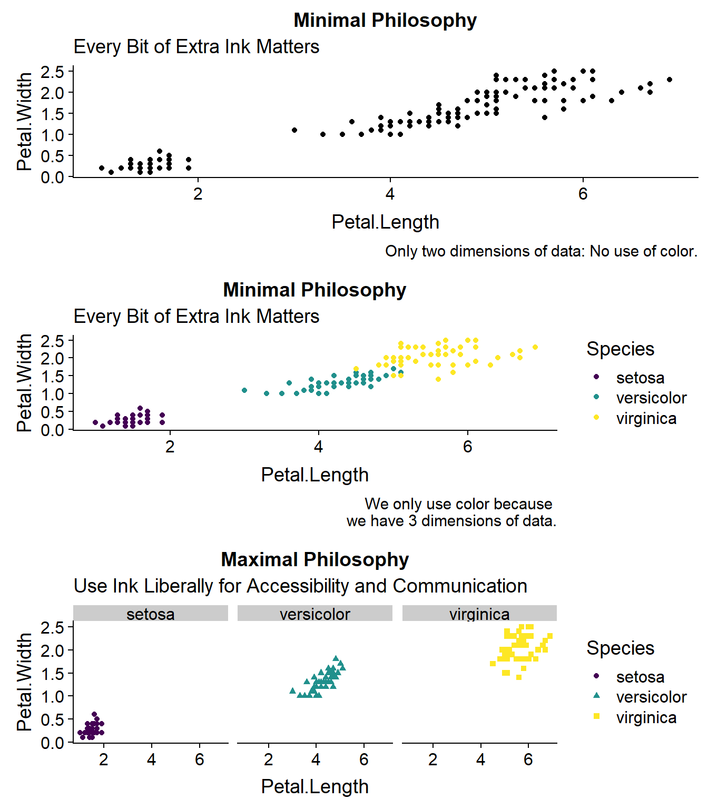

3 Cognition
3.1 Dimensions of Data
data(iris) # iris data set
names(iris) # dimensions of the data## [1] "Sepal.Length" "Sepal.Width" "Petal.Length" "Petal.Width"
## [5] "Species"p_minimal <- ggplot(iris,
aes(x = Petal.Length,
y = Petal.Width,
color = Species)) +
geom_point() +
scale_color_viridis_d() +
labs(title = "Minimal Philosophy",
subtitle="Every Bit of Extra Ink Matters",
caption = "If we didn't have a 3rd dimension, \nthis would be a grey-scale graph.")
p_maximal <- ggplot(iris,
aes(x = Petal.Length,
y = Petal.Width,
color = Species,
shape = Species)) +
geom_point() +
scale_color_viridis_d() +
labs(title = "Maximal Philosophy",
subtitle="Use Ink Liberally for Accessibility and Communication") +
facet_wrap(~Species)
plot_grid(p_minimal, p_maximal, nrow = 2)
3.2 Some Geometries Are Easier To Understand Than Others